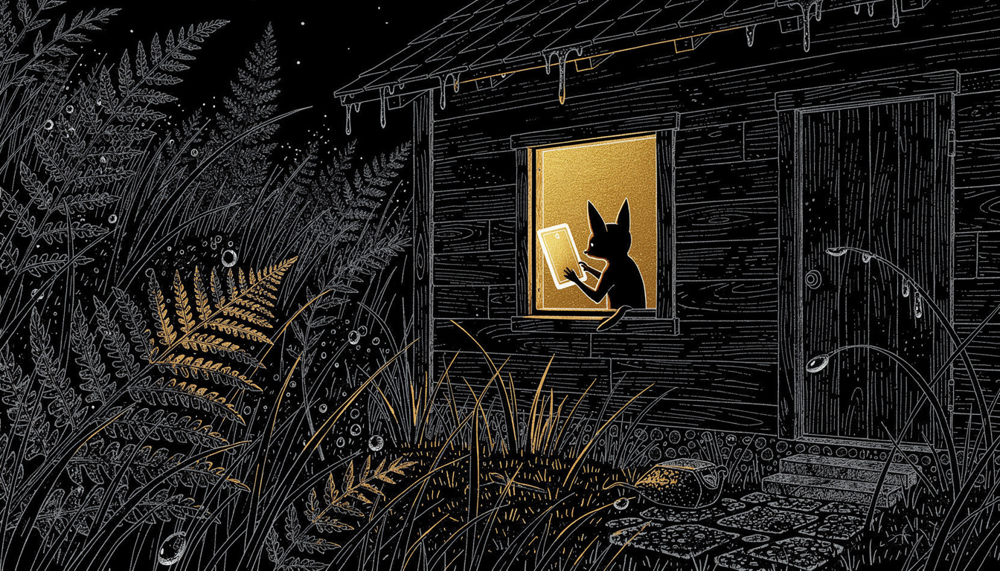
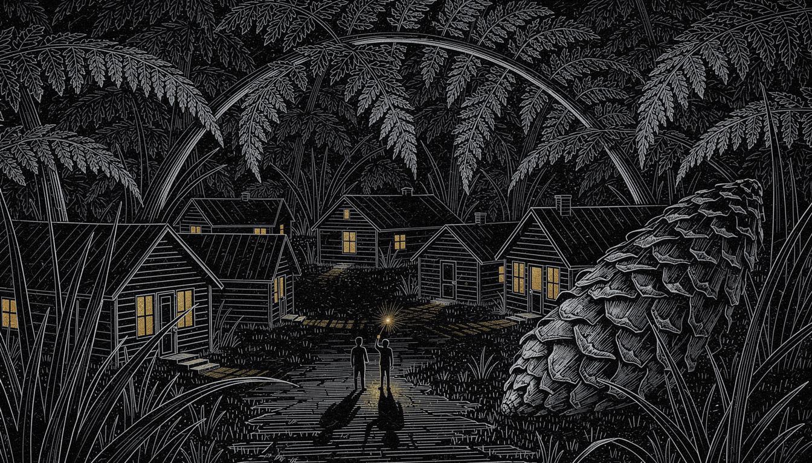
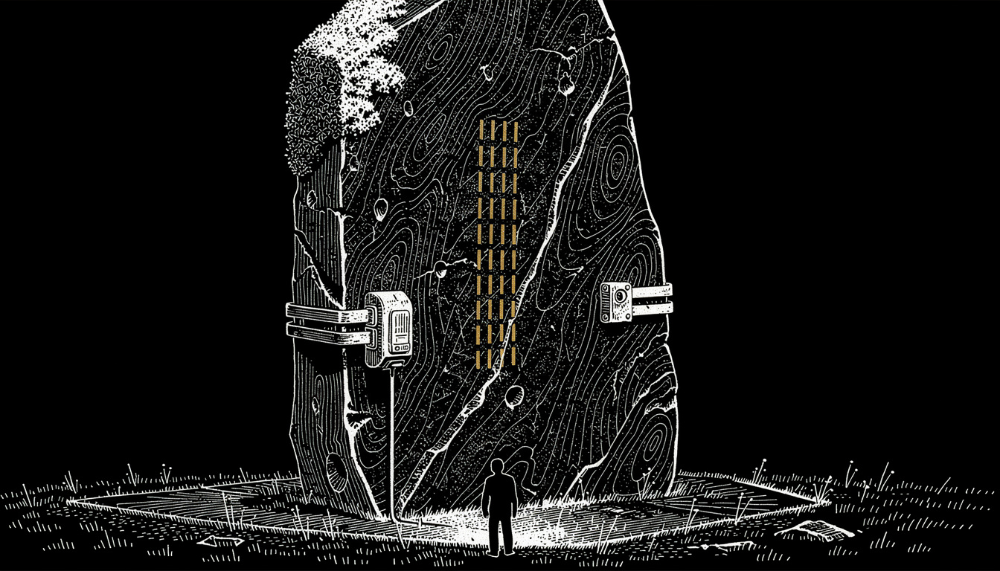

white-line wood engraving · solid black ground · one gold · beings as rim-lit silhouettes

{this.src=s+'?r='+this.dataset.r},700*this.dataset.r)}">
the windowA gold rectangle of lamplight, and in it a small being holding a card nearly as tall as itself up to the lamp. Ferns picked out in white line, a few fronds catching gold.

{this.src=s+'?r='+this.dataset.r},700*this.dataset.r)}">
the villageCabins with gold windows under arching ferns, a pine cone the size of a house, two rim-lit silhouettes in the lane with a small light between them.

{this.src=s+'?r='+this.dataset.r},700*this.dataset.r)}">
the waystoneContour-cut granite, moss stippled at the shoulder, instrument bands and a sensor housing in precise white line — and the marks as plain gold TALLY STROKES. A count, not a language. One resident stands at its foot.